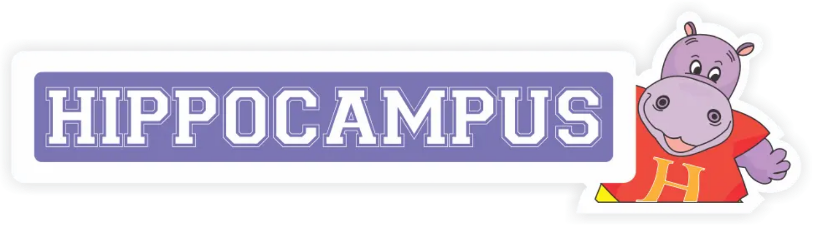
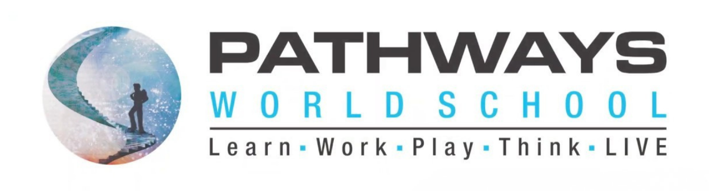
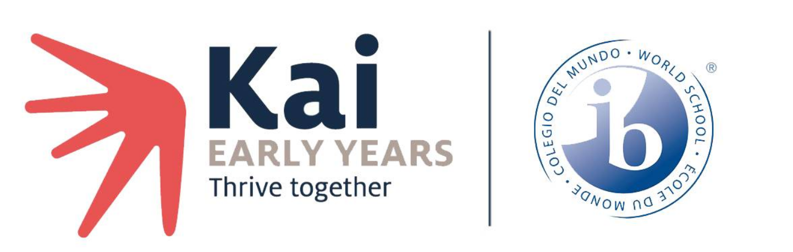
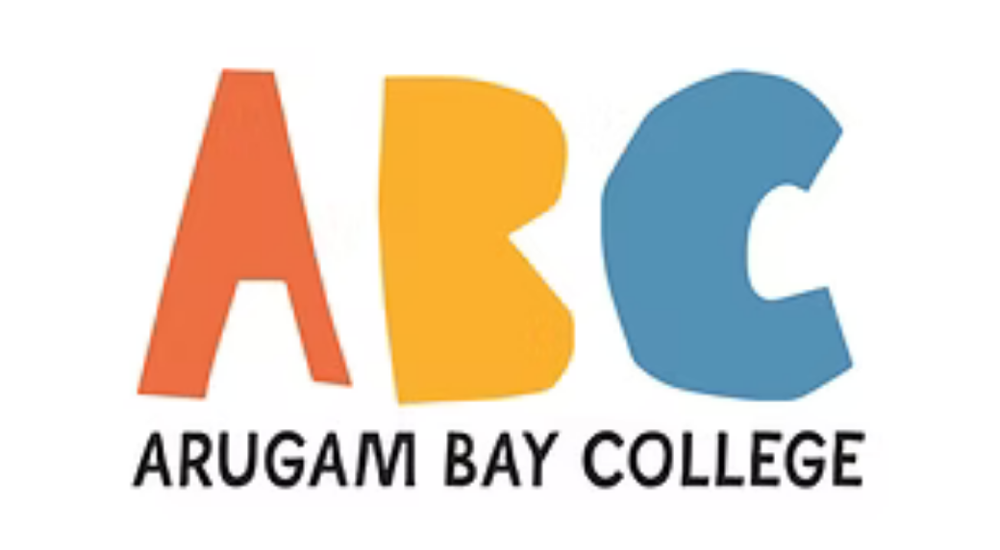
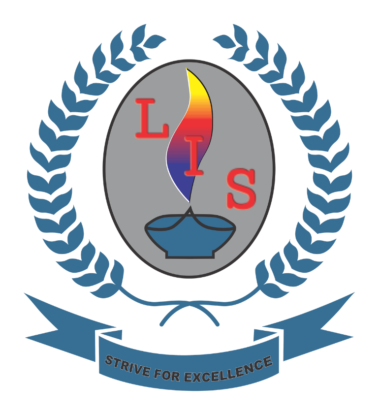

Structured observation of each child, right in the classroom.
02 · The parent's strand
A short survey on what home sees: behaviour, emotions, relationships.
03 · The child connects them
Direct tasks completed by the child tie both strands together.
TEACHER OBSERVATION
"Stays focused during group tasks."
RarelySometimesOften
3× a year · 5 minutes per child
PARENT SURVEY
"Talks about their feelings at home."
NeverSometimesOften
On WhatsApp · 10 minutes, once a term
DIRECT-FROM-CHILD TASK
Play-based tasks the child completes themselves.
Emotion Matching · Hearts & Flowers · Memory Game
Get a 360° view of the student.
12 foundational skills, measured from every side, term after term.
01 · Attention
Focusing on relevant information and sustaining it on a task.
02 · Working Memory
Holding and using information over short periods.
03 · Cognitive Flexibility
Shifting between tasks, perspectives, and strategies.
04 · Inhibition: Distraction
Resisting distractions to stay on task.
05 · Inhibition: Response
Pausing and thinking before acting.
06 · Planning & Organisation
Setting goals, planning steps, and structuring tasks.
07 · Emotion Awareness
Recognising and understanding one's own emotions.
08 · Emotion Regulation
Managing and responding to emotions appropriately.
09 · Empathy
Understanding and sharing the feelings of others.
10 · Relationship Skills
Building and maintaining positive interactions with others.
11 · Metacognition
Reflecting on and understanding one's own thinking.
12 · Critical Thinking
Analysing and evaluating information to form judgments.
Every child walks into middle school developmentally on track.
It's a measurement, not a promise. You can see exactly where each child stands, term by term, and what to do about it.
12 skills measured3× a year2,895 data points per childGrowth visible, not guessed
Ask
Any AI can answer. Only Tilli knows your student.
The same question, asked two ways. One answer is for any child. One is for this child.
A GENERIC AI CHATBOT
How do I help a 7-year-old who keeps losing focus in class?
Great question! Here are 10 general strategies: minimise distractions, take movement breaks, use positive reinforcement, try a reward chart…
Advice for the average child. It has never met yours.
ASK-TILLI · KNOWS DHRUV'S DATA
How do I help Dhruv focus in class?
Dhruv's attention is at Learner, but his working memory is Expert, and his parents report the same pattern at home. Start group tasks with the Week 14 attention warm-up, then let him lead the recall step.
Grounded in 2,895 data points on this one child.
30+ schools
have joined to understand their students
“
What makes this work so powerful is the way it brings research, data and classroom practice together, turning evidence into insights that can genuinely support teachers and children.





12,510
Students understood
4,541
Educators trained
What our partner schools did
MEASURE
Start with a real baseline
In the first weeks, every child is assessed across all 12 skills: teacher observation, parent report, and direct tasks. We repeat it three times a year, so growth shows up in the data instead of being guessed at.
2,895 data points per child.
ASK
Ask-Tilli, on WhatsApp
Teachers ask about a child or a class and get lesson plans, behaviour guidance, and that child's own data, in the middle of a school day, in seconds.
INTERVENE
A curriculum, not a workshop
36 weeks of play-based lessons for every class: Feelings Time workbooks, Teacher's Guidebooks, and the SEL Teaching Kit. 30 minutes a week. No new period, no extra prep.
Let's talk
Let Tilli help you understand your students' development better.
A 30-minute conversation with our founding team about your school, your children, and what's possible.